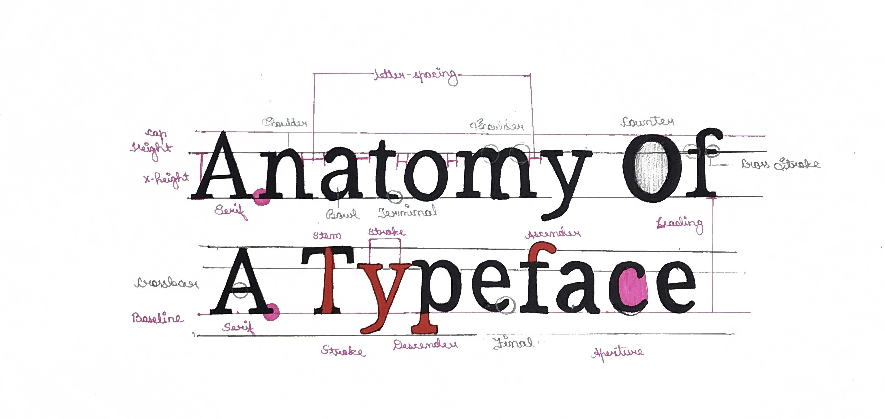
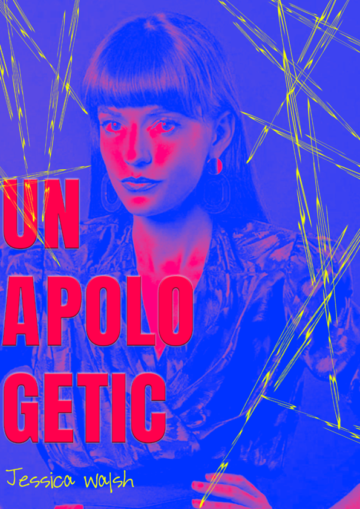

01 // Anatomy of a Typography System

02 // Typography Booklet Design
Typography is not just text — it is structure, rhythm, voice, and emotion. My work explores how letterforms create meaning through scale, spacing, contrast, and composition. Each study focuses on visual balance and expressive form.
EVERY SPACE CARRIES MEANING.